All figures in this report were produced from the author's offline HTML pages, run in a headless browser with fixed random seeds. Screenshots are taken from the same pages at phone size. Nothing was sent to a server.
This report describes and tests the option-layer method, an extension of the author's layer-propagation Sudoku solver. Each number's layer is described by the list of its whole placements ("options"). Options that cannot fit are cut; cells used by every option are certain; a layer with one option left is locked. Layers are built thinnest first, pairs and groups of 3–4 layers are checked together, and a guess is made only as the last step.
The same three ideas — units, options, pillars — were used for eight puzzles (Sudoku, Latin squares, Killer Sudoku, KenKen, Nonograms, Star Battle, N-Queens and map colouring) and for a new optimisation problem, Star Cost: Star Battle with a weight on every cell, where the cheapest placement is wanted.
Main findings.
This work continues three papers by the author, A Scalable Layer–Propagation and MRV Branching Method for Solving and Generating Large N×N Sudoku (versions 1–3). The papers describe a hybrid solver for any board size, from 4×4 up to 36×36, with rectangular boxes for sizes such as 6×6 (2×3 boxes) and 12×12 (3×4 boxes). It has five parts:
The papers report results for 9×9 to 36×36 at 25% and 35% clues, and compare the method with pure backtracking and human-style logic solvers.
The step described in this report grows out of the first idea: if each number is a layer, then each layer can be described by the list of whole placements it could still take. We call these placements options. Working with whole options, instead of single cells, lets the solver see facts that single-cell logic misses. It also carries over, almost unchanged, to other puzzles and to optimisation.
Every puzzle in this report is described with three words:
The method repeats a few simple rules until the board is solved. Each rule is cheap to explain, and every step it takes can be shown to a person as a reason.
| Rule | What it does |
|---|---|
| Cut | Remove every option that uses a cell which is already taken, or a cell whose candidate for this unit has been removed. |
| AND (certain cells) | If a cell is used by every remaining option of a unit, place it. |
| Narrow | If a cell is used by no remaining option of a unit, remove that unit's candidate from the cell. This is the OR of the options. |
| Singles | A cell with one candidate left, or a unit with one place left in a row, column or box, is filled (the papers' single-missing deduction). |
| 🔒 Lock | A unit with exactly one option left is locked: its whole placement is written at once. |
| Pair check | Two units that share cells must have options that fit together. An option of unit A that clashes with every option of unit B is cut. |
| Group check | The same test for 3 or 4 units together: an option is cut if no choice for the other units in the group fits beside it. |
| Probe (all units together) | Used in puzzles without a cheap group check: assume one option, run all the rules, and cut the option if a contradiction appears. |
| Guess | Only when nothing else works: try the smallest unit's options one by one, with backtracking (the papers' MRV branching). |
Listing every option of every unit can be expensive. The method therefore builds option layers incrementally. It starts with the two units that have the fewest options, and adds the next thinnest unit only when the checks stop making progress. When two units have the same count, the one with fewer free cells in a box goes first. On most puzzles the board is solved before the larger layers are ever listed; this is the "option layers built" count in Section 5.
function solveOptionLayers(board): units ← all units, sorted by estimated option count (fewest first) active ← first two units; build their option lists loop changed ← applyRules(active) // cut, AND, narrow, singles, lock if board solved: return board if changed: continue if pairCheck(active) cut something: continue if groupCheck(active, size 3..4) cut something: continue if some unit not active: active ← active + nextThinnest(); continue if probe(active) cut something: continue // puzzles without a group check u ← unit with fewest options // guess last (MRV) for each option o of u: if solveOptionLayers(board with o locked) succeeds: return it return fail
Single-cell logic looks at one cell or one line at a time. An option joins all nine places of a digit, so a single cut can reach across the whole board. Classic human techniques such as X-Wing, Swordfish and Jellyfish for one digit are special cases of the AND/narrow rule on one layer: they fall out automatically, without being coded. The pair check covers many two-digit patterns, and the 3/4-number group check covers the remaining hard cases in our tests (Section 5.1).
The same three words fit many puzzles. Only the list of units, and the way options are listed, changes. The table below is the "translation" used by each page.
| Puzzle | Units | Options | Pillar | Extra rule |
|---|---|---|---|---|
| Sudoku (4×4 to 16×16) | one layer per number | templates (one place per row, column, box) | cell | — |
| Latin square | one layer per number | permutations (no boxes) | cell | — |
| Killer Sudoku | number layers + cage layers | templates; digit sets that meet the cage sum | cell | no repeats in a cage |
| KenKen | number layers + cage layers | permutations; fillings that meet the cage target with +, −, ×, ÷ | cell | — |
| Nonogram | rows and columns | every placement of the line's blocks | cell | — |
| Star Battle | rows, columns, regions (+ optional 3×3 boxes) | sets of K stars in the unit | cell | a star empties its 8 neighbours |
| N-Queens | rows and columns | one cell per unit | cell | a queen empties its diagonals |
| Map colouring | regions | colours | border | triangle group check |
The rules of Section 3 run unchanged. For example, in a Nonogram the AND of a row's options is the classic "overlap" rule, and the pair check between a row and a column is the usual line-crossing logic. In Star Battle, the probe ("all units together") finds the placements that would squeeze a region to nothing.
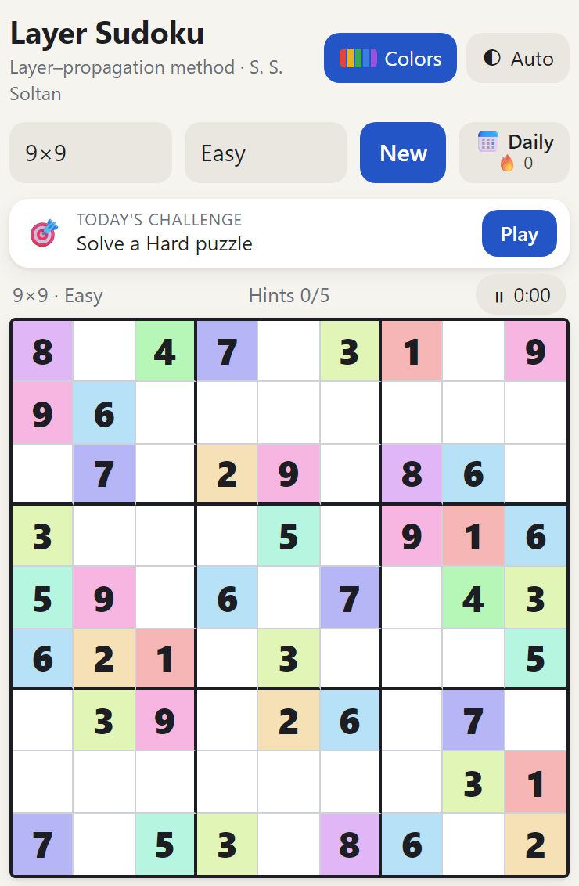
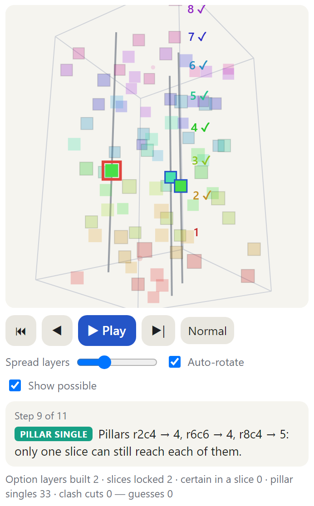
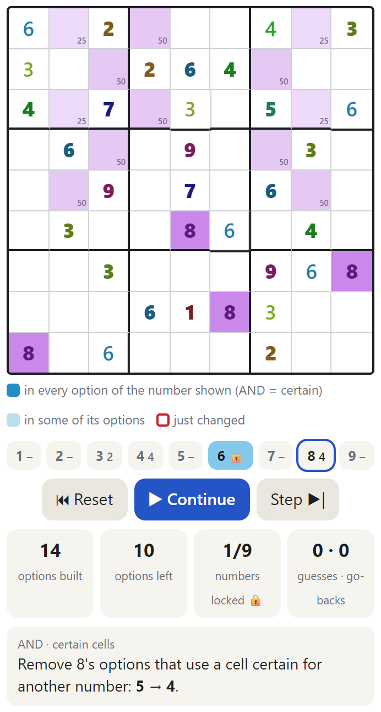
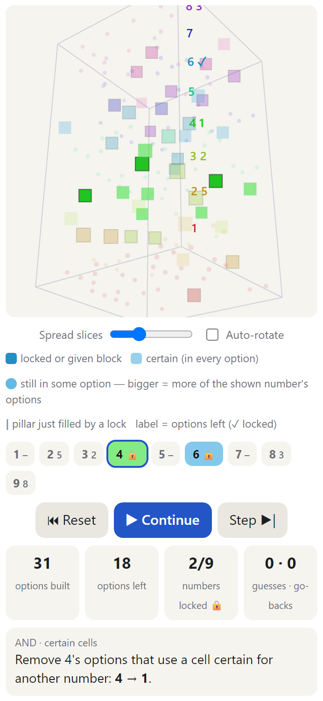
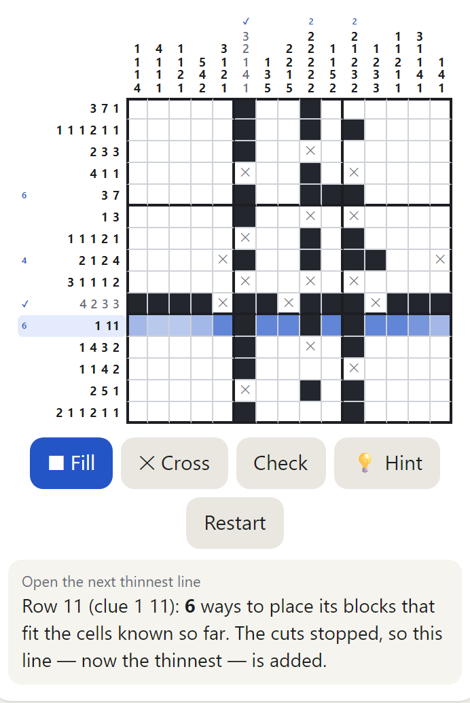
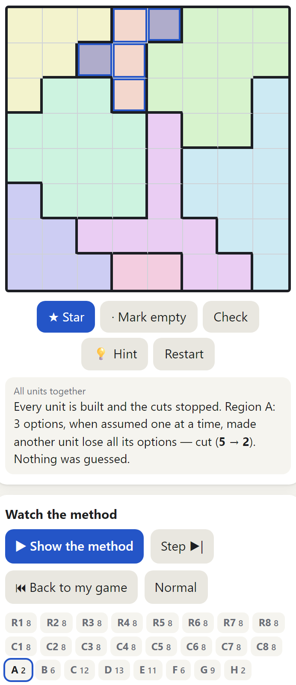
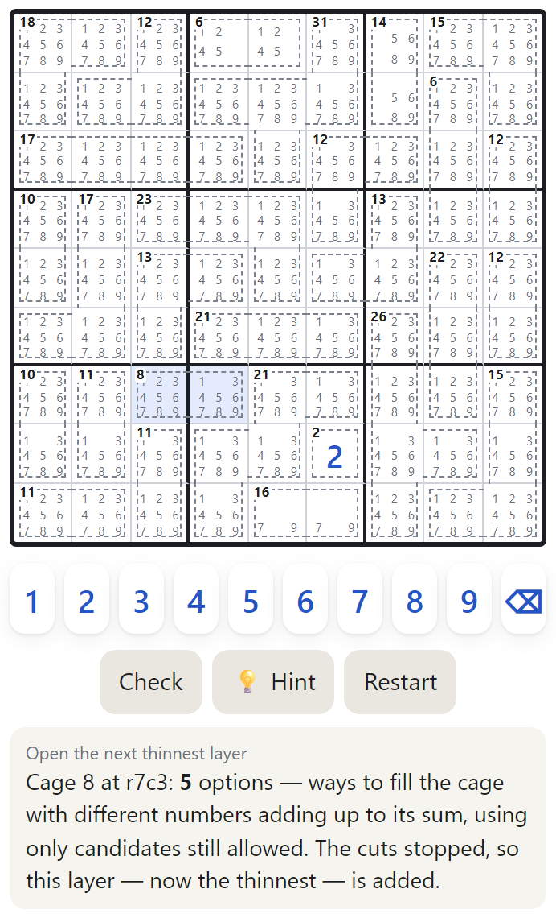
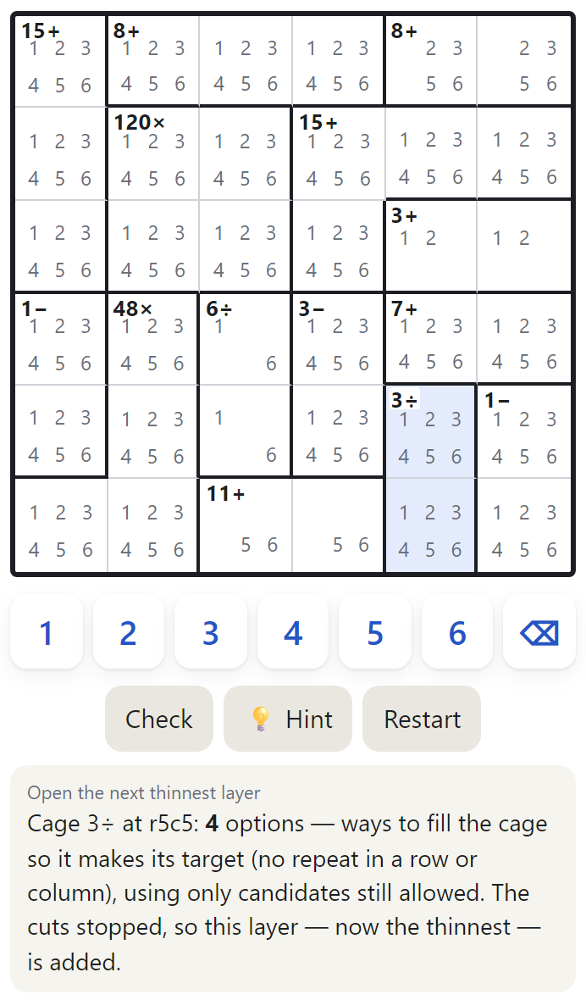
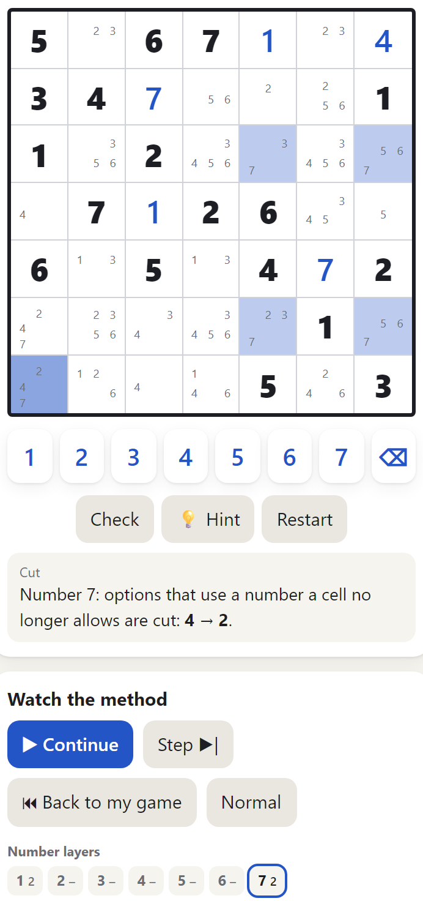
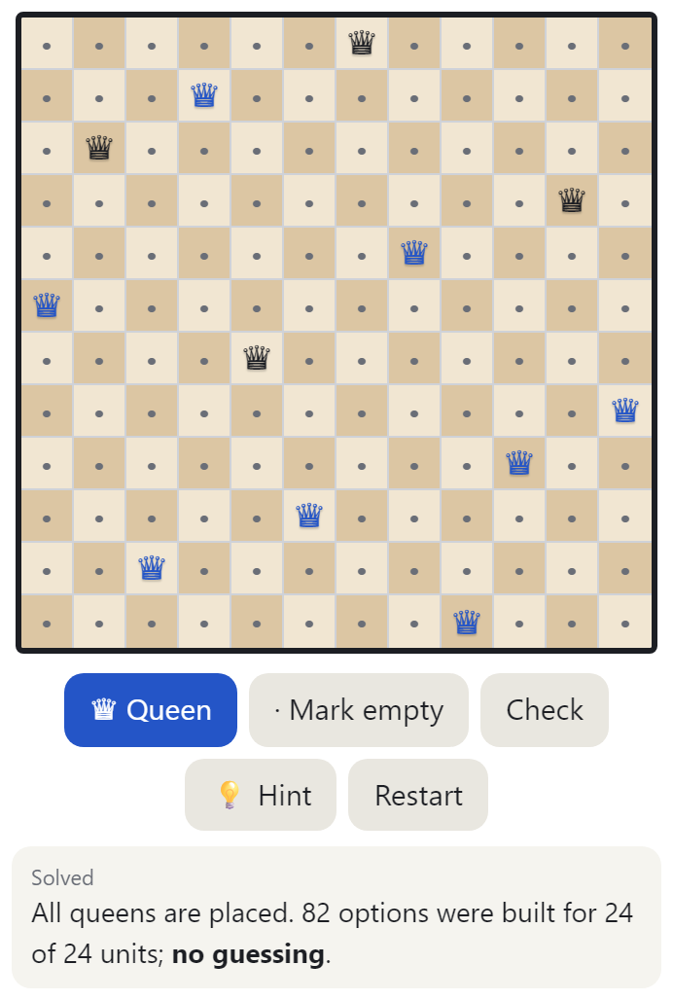
Set-up. Every page was loaded in a headless Microsoft Edge browser and driven by a small script (Appendix). The browser's random numbers were replaced by a seeded generator, so each puzzle can be made again from its seed. Every method ran on the same puzzles, one after the other, on one core. Every solution was checked against the rules. Times are browser milliseconds; the timer steps in units of 0.1 ms, so very small times are rounded.
Methods compared.
500 unique puzzles were made with seed 2026: 50 at each number of givens from 22 to 40. All six methods solved all 500 correctly.
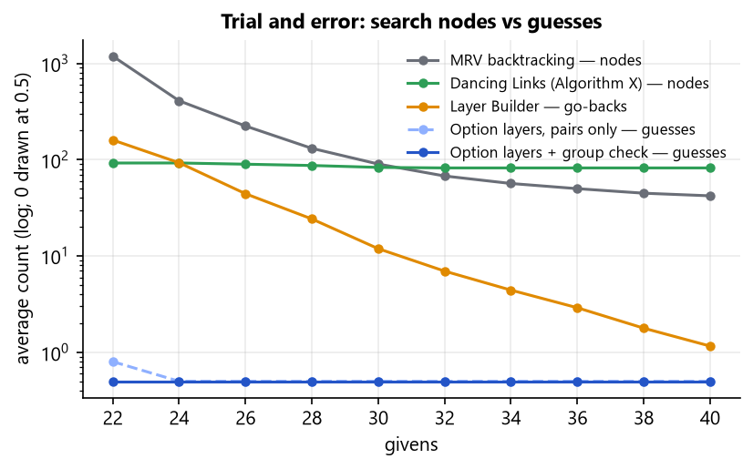
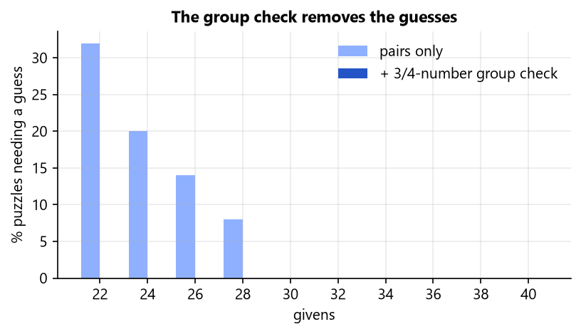
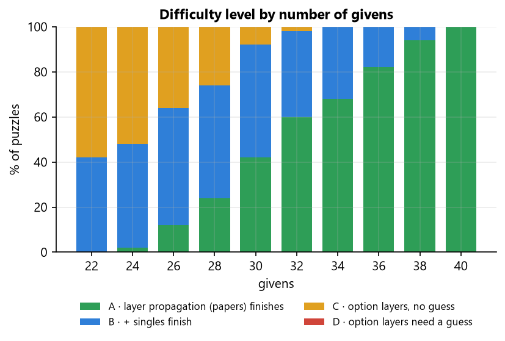
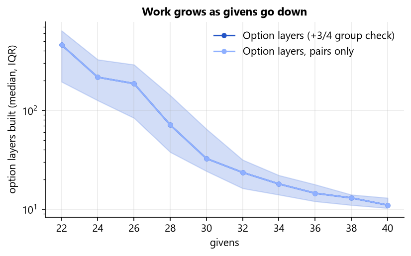
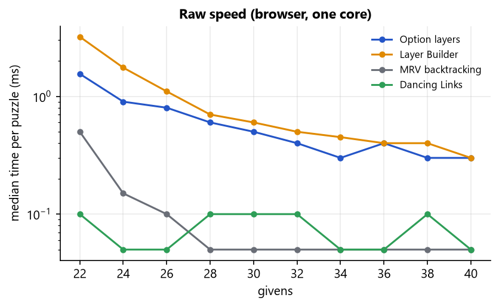
Hard puzzles (fewest givens that stay unique) were made for 4×4, 6×6, 9×9, 12×12 and 16×16 boards, with rectangular boxes where needed (2×3 for 6×6, 3×4 for 12×12).
| Board | puzzles | no guess | option lists built (median) | option layers ms | MRV ms | MRV nodes (avg) | Dancing Links ms |
|---|---|---|---|---|---|---|---|
| 4×4 | 40 | 40 | 4 | 0.1 | <0.1 | 13 | <0.1 |
| 6×6 | 40 | 40 | 7 | 0.2 | <0.1 | 25 | <0.1 |
| 9×9 | 40 | 40 | 83 | 0.65 | 0.1 | 159 | 0.1 |
| 12×12 | 25 | 24 | 1,158 | 5.7 | 0.9 | 1,673 | 0.1 |
| 16×16 | 12 | 12 | 4,769 | 23.8 | 1.9 | 2,064 | 0.3 |
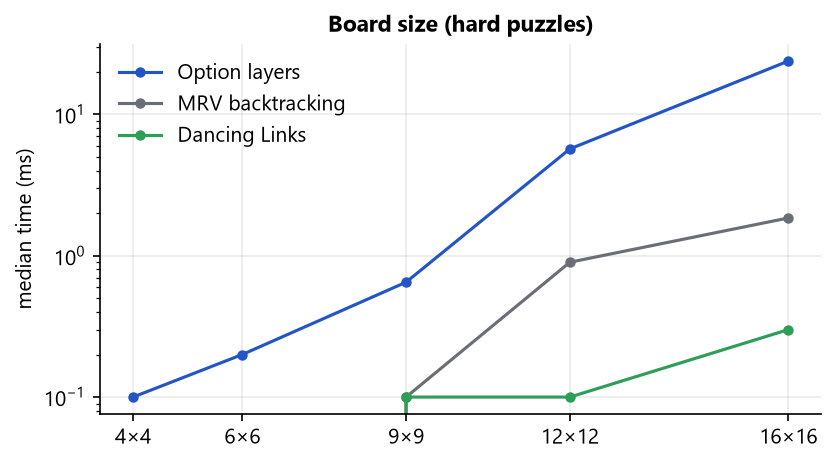
Each puzzle page's own generator made unique puzzles with fixed seeds. The same option-layer engine that the page shows step by step was timed against a classic solver for that puzzle.
| Puzzle | Sizes | puzzles | no guess | Baseline | Note |
|---|---|---|---|---|---|
| Sudoku 9×9 | 22–40 givens | 500 | 100% | Dancing Links | group check used in 37 |
| Latin squares | 5, 7, 9 | 105 | 100% | MRV | fewest givens that stay unique |
| Killer Sudoku | 6×6, 9×9 | 60 | 100% | cage-aware MRV | 9×9: 29 cages, median 46,172 search nodes for MRV |
| KenKen | 5, 6, 7 | 80 | 100% | cage-aware MRV | + − × ÷ cages |
| Star Battle | 6×6 1★, 8×8 1★, 10×10 2★ | 71 | 97% | row backtracking | probe used in every puzzle |
| N-Queens | 8 to 30, fewest givens | 105 | 85% | row backtracking | option layers solved all 105; backtracking hit its 5-million-node cap on 5 boards (20×20 and 30×30) |
| Nonograms | 10 to 20, three densities | 145 | 100% | DP line solver | line solver needed guesses on 16 puzzles |
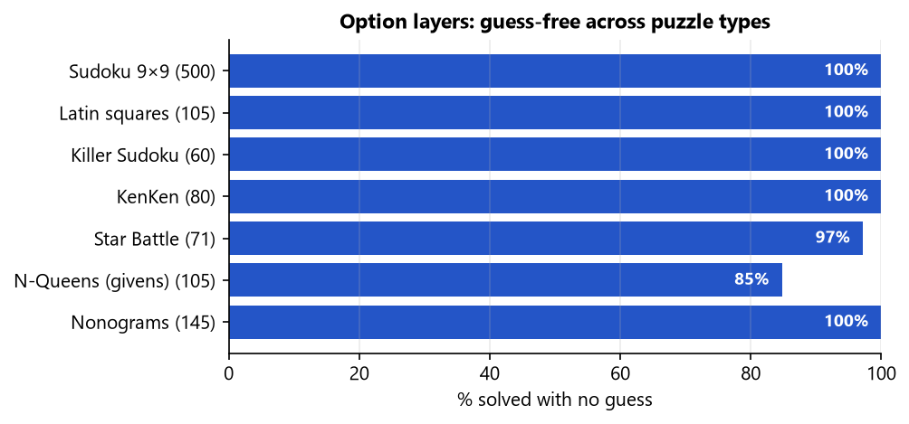
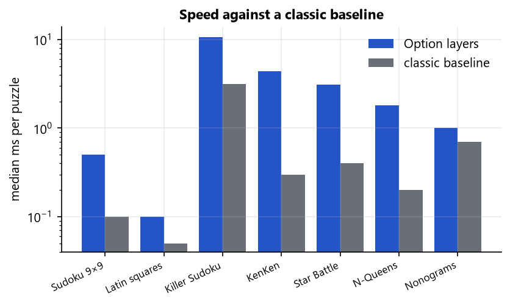
Where option layers win. Two results stand out. First, N-Queens with givens: at 30×30 the option layers took a median of 29 ms, while row backtracking took a median of 430 ms and failed to finish 4 of 10 boards within 5 million nodes. The attack rule empties whole diagonals at once, and locking a row with one cell left spreads far. Second, sparse Nonograms: a classic line solver settles each line on its own and then must guess. On sparse 15×15 puzzles it guessed in 14 of 25 (1,341 guesses in total). Option layers, with the "all lines together" probe, solved every one without a guess (Figure 5.9).
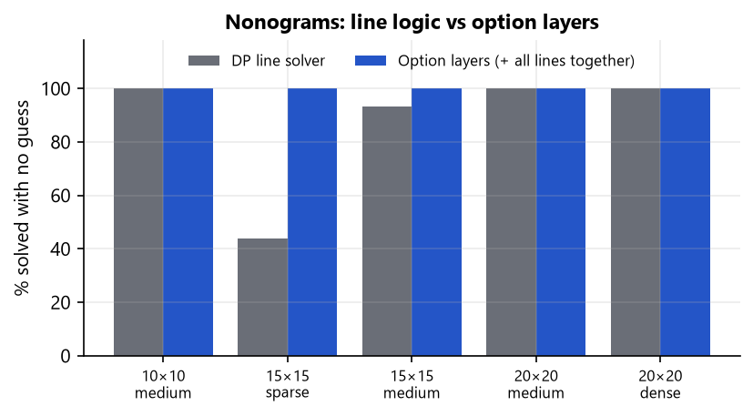
Where classic search wins. For small, dense puzzles (KenKen, Star Battle 1★, Latin squares), simple backtracking finds the answer in well under a millisecond, before option lists would even be built. Option layers pay for listing whole placements up front; that cost is repaid only when the search tree would otherwise be large. This is the engine written for the pages, with its step log; Section 5.4 shows what the core rules cost on their own.
The option-layer engine used so far records every step for the pages and adds the pair check, the 3/4-number group check and the probe. To see what the core of the method costs, a second engine was written with only four rules:
A guess (fewest options first) is made only when every layer is built and nothing changes. The data is kept in bit sets, so a cut or an AND is a few machine-word operations. There is no step log, no pair or group check, and no probe. The engine is in the new page LayerSudoku-Speed.html; short solves are repeated and averaged so that times below the 0.1 ms timer step are still measured.
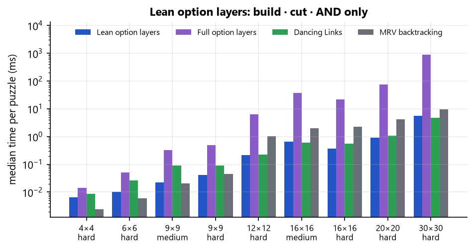
| Board | puzzles | givens | lean, most repeated first | lean, fewest open cells first | full option layers | Dancing Links | MRV | lean guessed | lean layers built |
|---|---|---|---|---|---|---|---|---|---|
| 4×4 hard | 100 | 4.5 | 0.0065 | 0.0057 | 0.014 | 0.0085 | 0.0024 | 0 | 2.0 of 4 |
| 6×6 hard | 100 | 11.5 | 0.010 | 0.0097 | 0.050 | 0.026 | 0.0060 | 1 | 2.3 of 6 |
| 9×9 medium | 100 | 31.7 | 0.022 | 0.020 | 0.33 | 0.089 | 0.021 | 4 | 3.9 of 9 |
| 9×9 hard | 100 | 27.5 | 0.042 | 0.037 | 0.49 | 0.091 | 0.046 | 23 | 5.9 of 9 |
| 12×12 hard | 30 | 54.1 | 0.22 | 0.21 | 6.3 | 0.22 | 1.05 | 18 | 11.4 of 12 |
| 16×16 medium | 10 | 110.8 | 0.64 | 0.50 | 36 | 0.60 | 2.0 | 5 | 15.4 of 16 |
| 16×16 hard | 10 | 110.2 | 0.38 | 0.36 | 21 | 0.56 | 2.3 | 2 | 13.6 of 16 |
| 20×20 hard | 20 | 189.8 | 0.92 | 0.73 | 74 | 1.07 | 4.1 | 1 | 15.1 of 20 |
| 30×30 hard | 10 | 480.0 | 5.6 | 3.4 | 879 | 4.8 | 9.5 | 0 | 19.6 of 30 |
Median milliseconds per puzzle; green = fastest. Both lean columns start with the top 2 layers. "Lean guessed" and "layers built" are for the most-repeated start. On 16×16 and larger boards, removing givens stops near half the cells (about 43% at 16×16, 48% at 20×20, 53% at 30×30), because proving that each puzzle still has one answer gets too slow; so these puzzles are easier than hard 9×9 ones, and "medium" and "hard" give the same number of givens at 16×16.
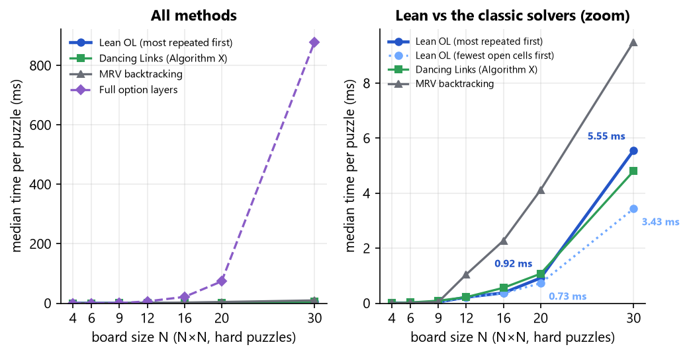
What the lean test shows.
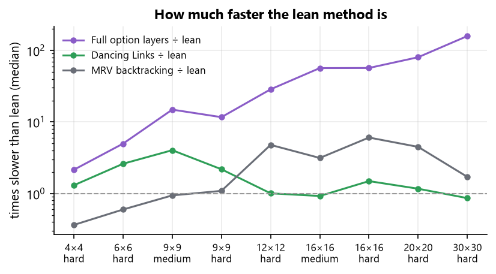
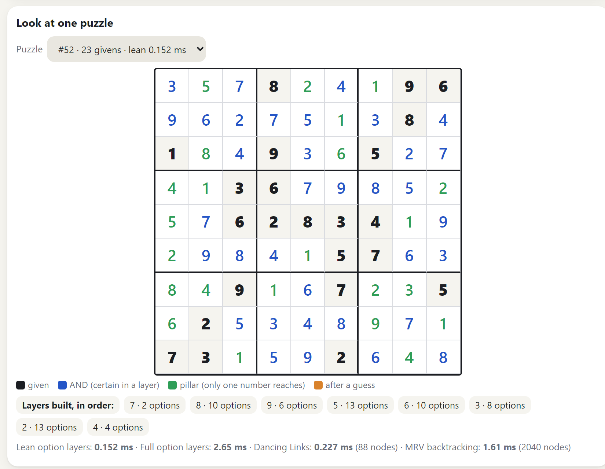
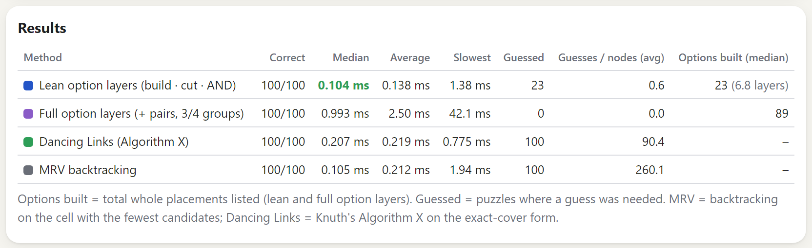
A logic puzzle asks for one answer that fits. An optimisation problem asks for the best of many answers. The option lists help in both: they say which answers are still possible, and they give cheap limits on how good an answer can be.
Maps were made by growing random regions (Voronoi cells) and joining neighbours. The page finds the fewest colours k by trying k = (largest group of mutual neighbours), k+1, … and proving each smaller k impossible. Each try is an option-layer solve: regions are units, colours are options, and a shared border is the pillar. A triangle of neighbouring regions is checked as a 3-unit group.
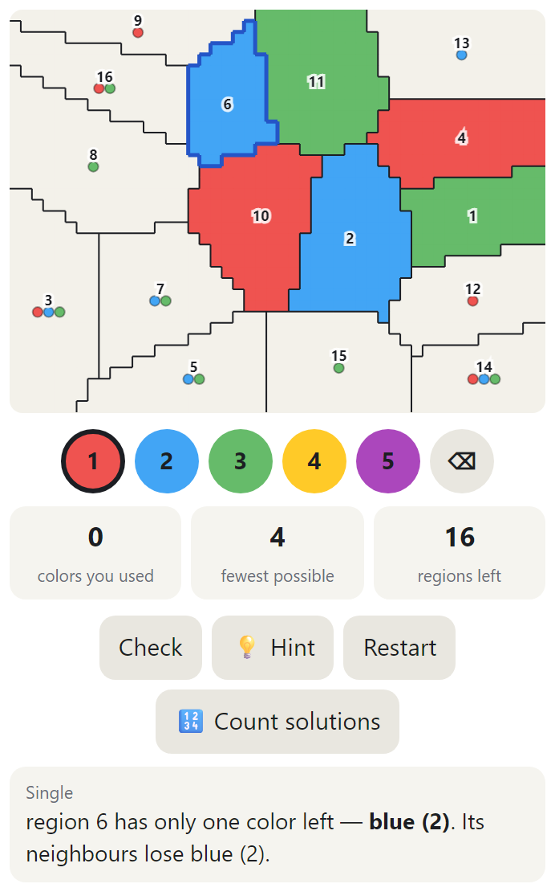
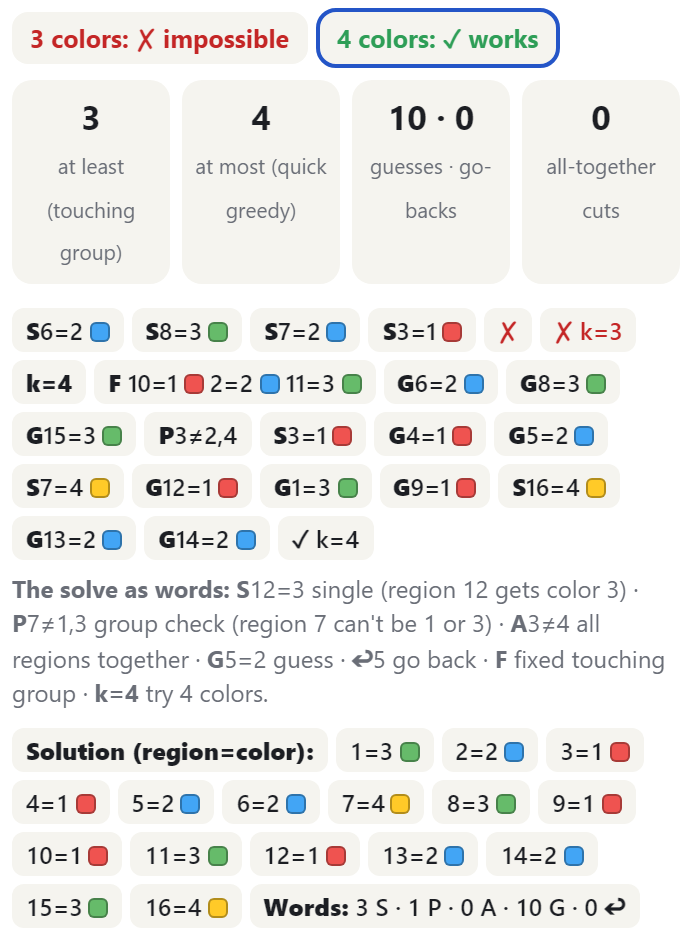
S12=3, P7≠1,3, ↩5) map each step to the numbered regions.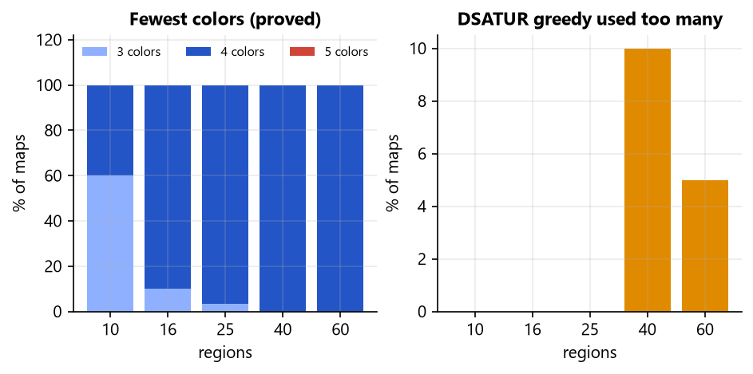
| regions | maps | need 3 | need 4 | DSATUR too many | option layers ms (median) | plain backtracking proof, nodes (avg) |
|---|---|---|---|---|---|---|
| 10 | 30 | 18 | 12 | 0 | 0.15 | 21 |
| 16 | 30 | 3 | 27 | 0 | 0.5 | 73 |
| 25 | 30 | 1 | 29 | 0 | 1.5 | 266 |
| 40 | 20 | 0 | 20 | 2 | 6.7 | 3,004 |
| 60 | 20 | 0 | 20 | 1 | 18.6 | 172,536 |
How many colourings work? The page's Count button counts every colouring. On the 10-region maps, only 0.01% (median) to 0.2% (most) of all ways to give each region one of the k colours obey the border rule; on 16-region maps it is about 0.0007%. The answers that work are a tiny island in a huge sea, which is why cutting whole options early pays off. No map needed more than four colours, as the four-colour theorem promises.
Star Cost adds a weights layer on top of a Star Battle board. Every cell has a cost from 1 to 9. The stars must still obey the rules (K stars in every row, column and region, no two touching), and the goal is the placement with the lowest total cost. This is like choosing where to put K facilities per area, when neighbouring sites may not both be used.
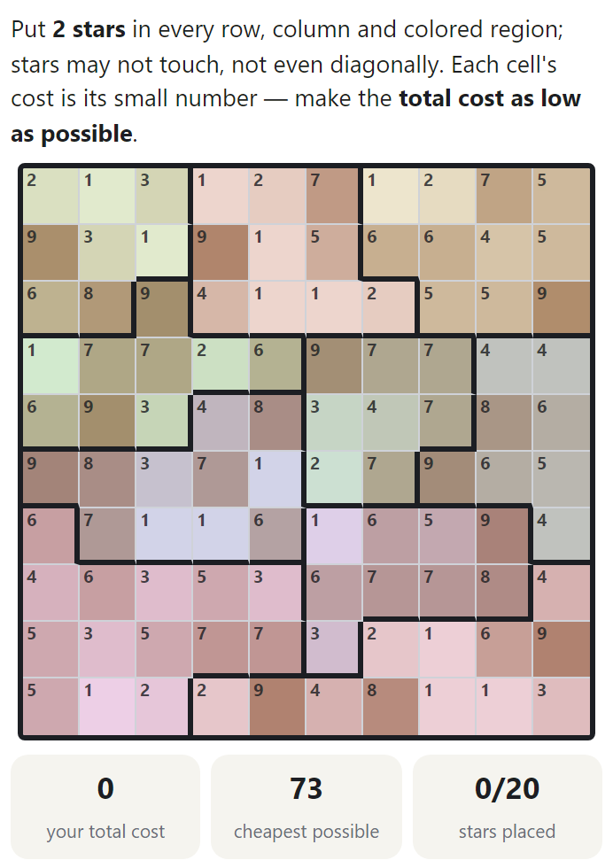
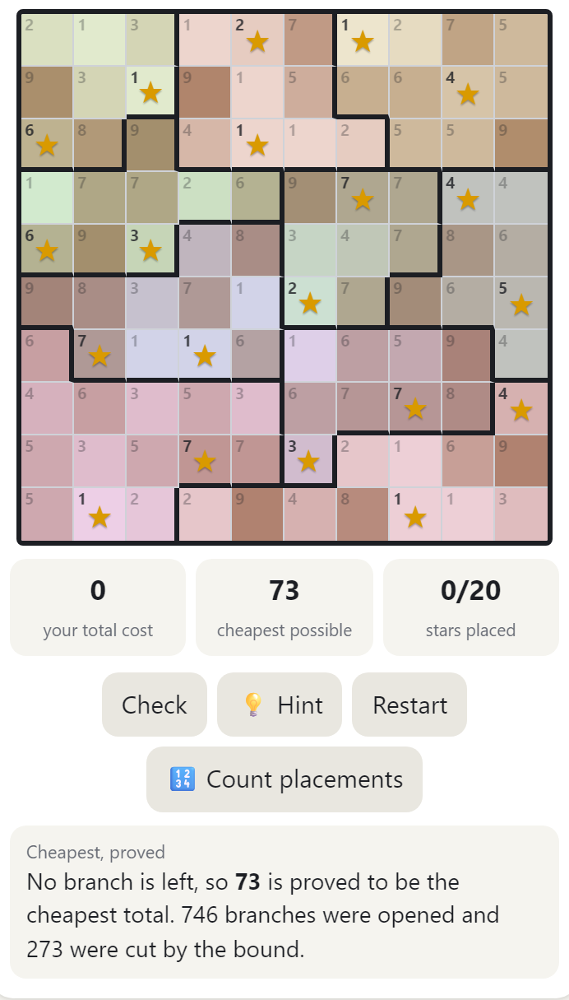
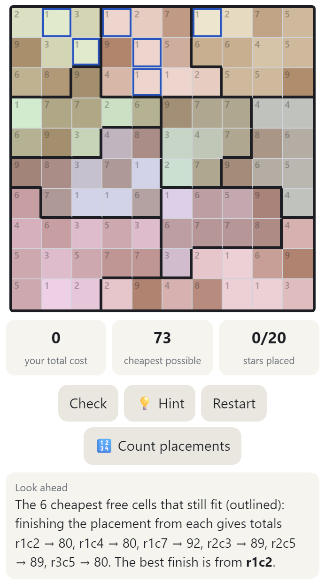
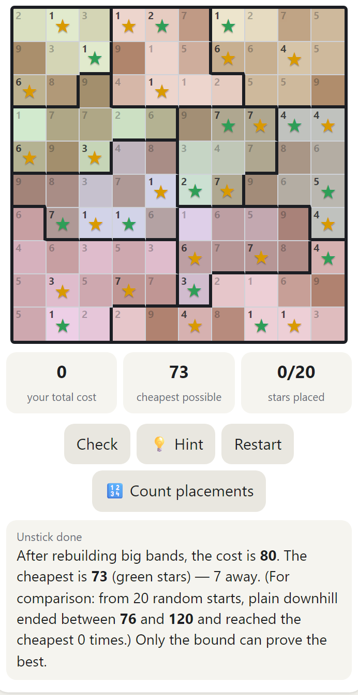
58 boards with random weights were solved by every method on the same seeds (Appendix). The exact methods had 8 seconds per board. "Best known" is the lowest cost any method found; it is proved cheapest on 50 of the 58 boards.
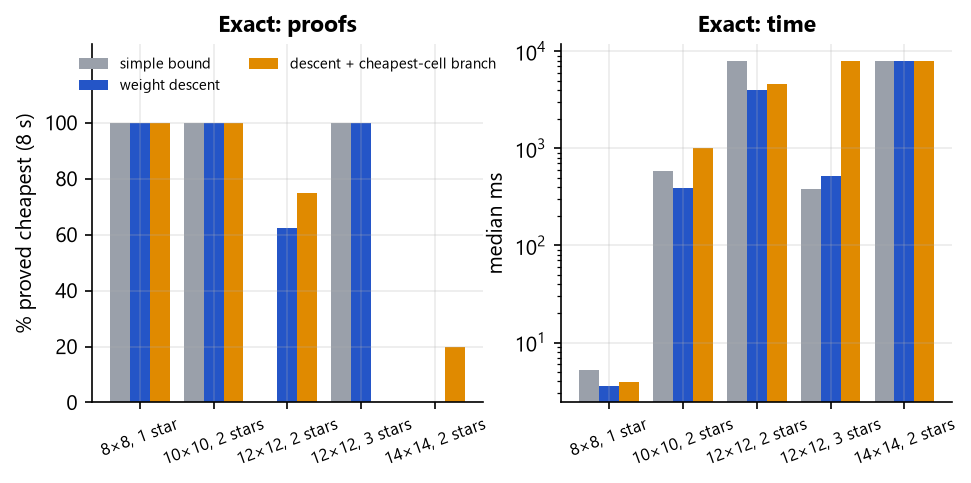
| Board | boards | simple bound: proved | descent: proved | descent + cheapest-cell: proved | root gap, simple | root gap, descent |
|---|---|---|---|---|---|---|
| 8×8, 1 star | 20 | 20 (5 ms) | 20 (4 ms) | 20 (4 ms) | 36% | 11% |
| 10×10, 2 stars | 15 | 15 (590 ms) | 15 (388 ms) | 15 (1,000 ms) | 41% | 31% |
| 12×12, 2 stars | 8 | 0 | 5 | 6 | 36% | 23% |
| 12×12, 3 stars | 8 | 8 (380 ms) | 8 (515 ms) | 0 | 47% | 44% |
| 14×14, 2 stars | 5 | 0 | 0 | 1 | 36% | 24% |
Root gap = how far the first lower bound lies below the best known cost (average). Times are medians.
What the exact results show. The weight-descent bound starts much closer to the answer (11% instead of 36% below on 8×8), so fewer branches are opened. It is the difference between proving 0 and 5 of the 12×12 two-star boards. Branching on the cheapest cell helps on 12×12 two-star boards (6 proved) but fails on three-star boards, where so few placements fit that choosing by unit (fewest options) is far better. The two rules complement each other; the page lets the user pick.
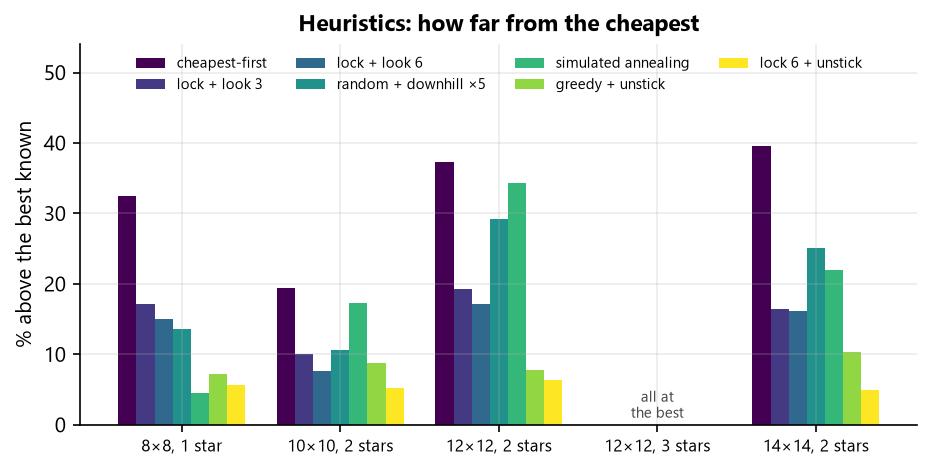
| Heuristic | 8×8, 1★ | 10×10, 2★ | 12×12, 2★ | 14×14, 2★ | typical time |
|---|---|---|---|---|---|
| ⚡ cheapest-first | 32.5% | 19.5% | 37.2% | 39.6% | 1–225 ms |
| 🔒 lock cheapest, look 3 | 17.1% | 10.1% | 19.3% | 16.4% | 0.01–2 s |
| 🔒 lock cheapest, look 6 | 15.1% | 7.6% | 17.1% | 16.1% | 0.01–3.6 s |
| random start + downhill ×5 | 13.7% | 10.6% | 29.2% | 25.1% | 3 ms–1 s |
| simulated annealing | 4.4% | 17.3% | 34.3% | 21.9% | 50–330 ms |
| greedy + downhill + Unstick | 7.3% | 8.8% | 7.8% | 10.3% | 7 ms–1.1 s |
| lock 6 + Unstick | 5.6% | 5.2% | 6.4% | 4.9% | 0.02–4.8 s |
What the heuristics show. Plain cheapest-first is fast but greedy: it lands 20–40% above the best. Locking the cheapest cell with a look-ahead halves that gap. Unstick — freeing a large band of rows or columns and rebuilding it exactly with option layers — is the strongest single step, and lock 6 + Unstick was the best heuristic on every board size except the smallest, within about 5–6% of the best. Simulated annealing is best on small 8×8 boards but falls behind as the board grows, because its small moves rarely get past the no-touch rule. Plain cheapest-first could not finish 6 of the 58 boards within 3 s; the locking methods always finished.
The table places each part of the method next to the known technique it is closest to. The full engine is not claimed to beat these algorithms in raw speed; it is a single, explainable framework that covers all of them. The lean engine (Section 5.4) does match them in speed.
| Existing algorithm | How it works | Relation to option layers | In our tests |
|---|---|---|---|
| Backtracking with MRV (Norvig; the papers' branching) | Propagate single candidates, then branch on the cell with fewest values. | Option layers keep MRV only as the last rule ("guess last"), and branch on a unit's options, not a cell's values. | Faster than the full engine on 9×9 (0.1–0.5 ms), but up to 1,186 nodes per puzzle at 22 givens. In the lean test MRV was fastest on 4×4 and 6×6; lean was level on 9×9 and 1.7–6× faster from 12×12 to 30×30. |
| Dancing Links / Algorithm X (Knuth) | Exact cover: choose one row for every column, with fast undo. | Same exact-cover picture: an option is a set of rows of one digit, and a pillar is a cell column. DLX searches row by row; option layers reason with whole sets and cut before searching. | Faster than the full engine on every size (5× on 9×9, about 180× on 30×30). Lean option layers were 2–4× faster up to 9×9 and level on 12×12–20×20; at 30×30 Dancing Links beat the most-repeated start (4.8 vs 5.6 ms) but not the fewest-open-cells start (3.4 ms). |
| Pattern overlay / templates (Sudoku solving community) | List all templates of a digit and overlay them to find certain and impossible cells. | The closest known relative: the AND/narrow rule on one layer. Option layers add thinnest-first building, the pair and 3/4-number group checks, locks, probes, and the same idea for seven other puzzles. | Pairs-only (closest to plain overlay) still needed guesses on 37 of 500 puzzles. |
| Human-style rules (X-Wing, Swordfish, naked/hidden sets) | A catalogue of named patterns. | Single-digit fish patterns are special cases of the AND/narrow rule. No catalogue is needed. | — |
| Nonogram line solvers (dynamic programming) | Settle each line alone by DP over block positions, repeat, then guess. | A line's options are its block placements; the DP line solver computes their AND and OR. The probe adds "all lines together". | DP guessed on 16 of 145 puzzles; option layers on none. |
| DSATUR (Brélaz) and graph-colouring branch and bound | Colour the most constrained region first; branch to prove the minimum. | Regions are units, colours are options, borders are pillars; the triangle group check is a 3-unit group check. | DSATUR used one colour too many on 3 of 40 large maps; option layers proved the minimum on all 130. |
| Branch and bound with Lagrangian relaxation | Relax hard rules with prices, and adjust the prices by subgradient steps to raise the lower bound. | The Star Cost "weight descent" bound is exactly this: prices on columns and regions, updated by gradient steps. | See Section 6.2. |
| Local search: simulated annealing, steepest descent, large-neighbourhood search (LNS) | Improve a full answer by small moves, or by freeing part of it and rebuilding. | Downhill uses rectangle swaps; Unstick is LNS with an exact option-layer rebuild of 60% of the rows or columns. | See Section 6.2. |
The Few Givens page races the methods on the same puzzles made by filling a random fraction of a solved grid. Few givens usually leave many answers, so these tests show a side of the problem that carved puzzles (exactly one answer) do not. The results below are from 9×9 unless the size is named.
What decides the winner is not the fill %, and not only the number of answers. It is how many wrong choices still look right to simple candidate counting.
Wasted tries are the MRV guesses that were later undone. The puzzles are 9×9, grouped by their number of answers.
| Puzzles | Answers | MRV wasted (median) | Worst | Best method |
|---|---|---|---|---|
| Random fill, very open | > 1,000 | 9 | 13,329 | MRV usually (any choice works), but it has rare very long runs |
| Random fill | 101 – 1,000 | 11 | 754 | Middle zone: MRV wastes the most here; option layers are safer on big boards |
| Random fill | 11 – 100 | 2 | 793 | MRV on 9×9 |
| Random fill | 2 – 10 | 0 | 234 | MRV on 9×9 (easy for both) |
| Random fill | exactly 1 | 0 | 23 | MRV on 9×9 (easy for both) |
| Carved hard | exactly 1 | 40 | 1,588 | Option layers (lean), with the gap growing from 12×12 up; on 9×9 lean and MRV are close |
The last two rows have the same number of answers (one) but very different MRV work: 0 against 40 wasted tries at the median. A carved puzzle is made by removing givens for as long as the answer stays unique, so it ends with the fewest givens that still force one answer, and its reasons are hidden. A random-fill puzzle with one answer usually has more givens than it needs, and plain counting sees the answer.
| Fill | Usual answers | MRV wasted (median) | Best method |
|---|---|---|---|
| One given per number, 5 – 20% | thousands and more | 0 – 2 | MRV (rare huge runs at 20 – 25%, up to 4.4 million steps) |
| 25 – 34% | hundreds (34%: median about 175) | 5 – 10 | The hardest zone for MRV. On 16×16 at 34 – 40%, option layers solved 30 of 30 while MRV and Dancing Links stopped at their 5-million-step limit. |
| 40% | a few (5% unique) | 2 | MRV on 9×9, option layers on 16×16 |
| 45 – 50% and more | 1 to a few (40% unique at 50%, 87% at 70%) | 0 | Easy for both; MRV is quicker on 9×9 because it has no layers to build |
This is the easy–hard–easy pattern known from constraint problems (Cheeseman, Kanefsky and Taylor, 1991): with very few givens nearly every choice leads to an answer, with many givens simple counting finds the answer, and in between there are many choices that look right but fail later.
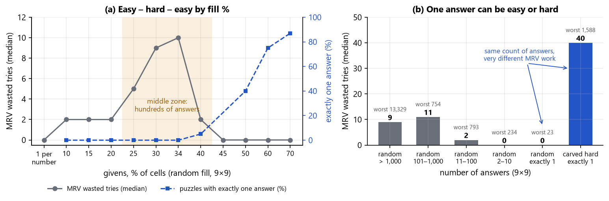
| Size | Winner | Why |
|---|---|---|
| 4×4, 6×6 | MRV | Almost nothing to search |
| 9×9 | Close: lean had the fastest median, MRV level on medium puzzles | Building the layers costs about as much as it saves |
| 12×12, 16×16 | Option layers (1.7 – 6× faster than MRV; level with Dancing Links) | Wrong MRV paths grow faster than the cost of building layers |
| 20×20, 30×30, 100×100 | Option layers, with a growing gap | Section 5.4, Figures 5.10 – 5.11 |
Limits: the table by number of answers is 9×9 only. For 16×16 and larger there are the 34 – 40% random-fill runs (30 puzzles) and the carved runs of Section 5.4, but no split by number of answers. Worst-case values come from single runs and are less stable than the medians.
The option-layer cube (row × column × number) can be held as one N×N×N true/false tensor: a point is true while that number can still go in that cell. Every rule of Sudoku says "exactly one true point on each line of the cube" — each cell, and each number in each row, column and box. This chapter tests four engines built on that view, on the Tensor Layers page (LayerSudoku-Tensor.html), against the lean engine and the classic solvers.
10 seeded puzzles per case, the same puzzles for every method, after a warm-up; fast runs are repeated and averaged. Tensor, shared and Dancing Layers engines: start top 2, cap 2,000. Median time per puzzle in ms; green = fastest overall, bold = fastest option-layer engine where a classic solver was faster; a red fraction = puzzles solved within the 5-million-step limit.
| Puzzles | Givens | Tensor · numbers | Tensor · all 4 | Tensor · R/C/B | Shared patterns | Dancing Layers | Matrix top 2 | Matrix top 3 | Lean OL | Exact cover, no templates | Dancing Links | MRV |
|---|---|---|---|---|---|---|---|---|---|---|---|---|
| 9×9 hard, 1 answer | 28 | 0.19 | 0.18 | 0.28 | 0.16 | 0.13 | 1.17 | 1.17 | 0.11 | 0.19 | 0.16 | 50 µs |
| 9×9 random 20% | 16 | 10.5 | 19.5 | 26.9 | 8.89 | 0.39 | 45.0 | 38.7 | 5.00 | 0.28 | 0.30 | 0.15 |
| 9×9 random 34% | 28 | 0.73 | 1.88 | 1.14 | 1.04 | 0.11 | 1.66 | 1.60 | 0.19 | 0.13 | 0.29 | 38 µs |
| 16×16 hard, 1 answer | 108 | 0.79 | 0.44 | 0.65 | 0.58 | 0.82 | 21.7 | 15.7 | 1.48 | 1.19 | 1.35 | 4.87 |
| 16×16 random 40% | 102 | 23.2 | 37.9 | 49.4 | 12.1 | 1.26 | not run | not run | 30.8 | 1.08 | 1.71 | 260 (8/10) |
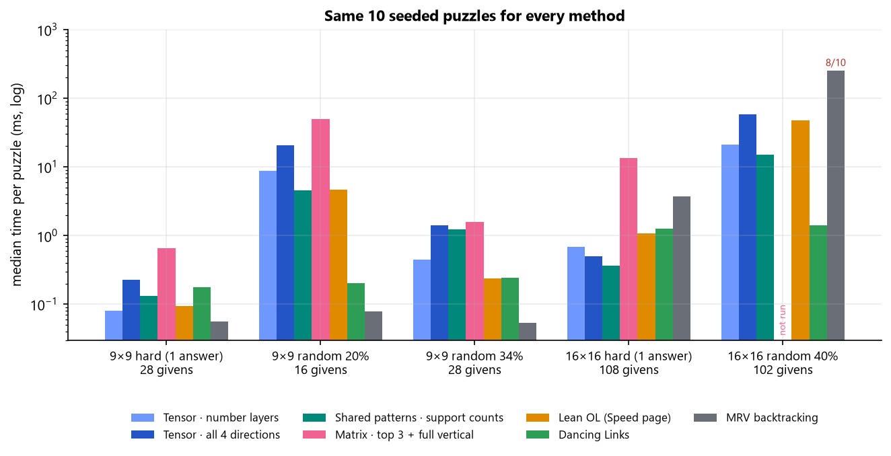
Limits: 10 puzzles per case, one machine, Node (V8) rather than the browser; sizes above 16×16 and other fills were not measured. Script: report/tools/exp_tensor.mjs; data: report/data/tensor.json; chart: report/tools/f_tensor.py.
The idea of listing whole placements of a digit is known in the Sudoku community as the pattern overlay method or templates. Exact cover and Dancing Links (Knuth, 2000) give the same set picture for search. Nonogram line solvers compute the overlap of all placements of a line by dynamic programming. Constraint programming uses table constraints (lists of allowed tuples) and singleton arc consistency, which is close to the probe rule. Lagrangian relaxation for lower bounds and large-neighbourhood search (Shaw, 1998) are standard in operations research. The contribution of this work is to join these ideas in one layered method, with thinnest-first building and group checks, and to show that the same units-options-pillars view carries across eight puzzles and into optimisation, while keeping every step explainable.
All experiments use the author's single-file HTML pages in C:\Sudoku_shaimaa. A Node.js script (Node 24) opens each page in headless Microsoft Edge through the Chrome DevTools Protocol, without any extra package. Before a page loads, Math.random is replaced by the seeded generator mulberry32, so __seed(n) makes every puzzle again exactly. Charts are drawn with Python (matplotlib). The scripts are in report\tools:
| Script | What it does | Output |
|---|---|---|
| cdp.mjs | Starts headless Edge, opens a page, runs code, takes screenshots, prints PDF. | — |
| baselines.js | The classic solvers: MRV backtracking, Dancing Links, row backtracking for Star Battle, DP line solver, map backtracking, cage-aware MRV. | — |
| exp_sudoku.mjs | Section 5.1: 50 puzzles at each of 22, 24, …, 40 givens; six methods each. | data/sudoku_givens.json |
| exp_puzzles.mjs | Sections 5.2, 5.3, 6.1: sizes, Latin, Killer, KenKen, Star Battle, N-Queens, Nonograms, maps. | data/<name>.json |
| exp_lean.mjs | Section 5.4: lean vs full option layers, Dancing Links and MRV (engines from LayerSudoku-Speed.html). | data/lean.json |
| exp_cost.mjs | Section 6.2: Star Cost exact methods and heuristics. | data/starcost.json |
| shots.mjs | Phone-size screenshots (390×844, 2× pixels). | shots/*.png |
| charts.py | All figures and the numbers quoted in this report. | fig/*.png, data/_numbers.json |
| Experiment | Seeds | Settings |
|---|---|---|
| Sudoku by givens | 2026 (one stream for all 500) | 9×9, givens 22–40 in steps of 2, 50 each, unique |
| Sudoku sizes, Latin, Killer, KenKen, Star Battle, Queens, Nonogram, maps | 1000+n (sizes), 2000+n (Latin), 3000+n (Killer), 4000+n (KenKen), 5000+n (Star Battle), 6000+n (Queens), 7000+7n+density% (Nonograms), 8000+R (maps) | sizes and counts as in Sections 5–6; baseline caps: 3–5 million nodes, 5 s |
| Lean speed test | 11000 + 10·n (+1 for hard) | sizes 4–30; 100 (4×4–9×9) / 30 (12×12) / 10 (16×16) / 20 (20×20) / 10 (30×30) puzzles; short solves repeated to at least 8 ms and averaged |
| Star Cost | 9000 + 100·N + 10·K + k | random weights 1–9; exact budget 8 s; heuristics 3 s (cheapest-first), 6 s (lock); annealing 20,000 steps; Unstick 12 rounds |
| Screenshots | 3–51, fixed per page | 390×844 viewport, device scale 2 |
cd C:\Sudoku_shaimaa\report\tools node exp_sudoku.mjs node exp_puzzles.mjs (all sections; or one name, e.g. killer) node exp_lean.mjs node exp_cost.mjs node shots.mjs python charts.py
Timings depend on the computer; counts (guesses, nodes, proofs) depend only on the seeds.